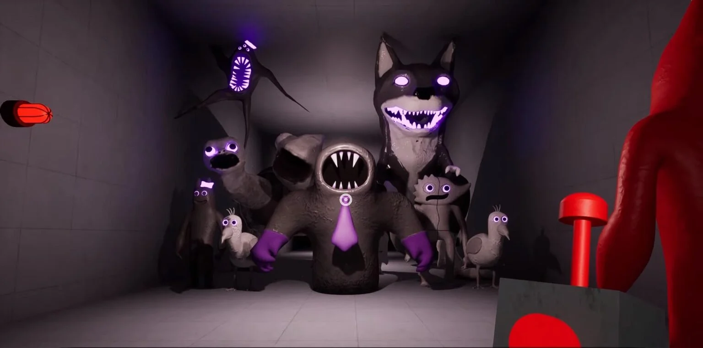

シリーズ一覧
さぁ、Garten of Banbanの世界に飛び込もう！リリース済みのゲームシリーズを一気にご紹介！
【Garten of Banban 1】
- 価格：無料
- リリース日：2023年1月6日
- ストーリー：行方不明になった我が子を探すため、バンバン幼稚園に足を踏み入れたあなたを待ち受けていたのは、可愛くも不気味な"マスコット"たちだった・・・。
- 説明：記念すべきGoBBシリーズ第1作目。約10分でサクッと遊べるのに、世界観はしっかりと伝わってくる。相棒のドローンを駆使して、迫りくる恐怖から逃げ切ろう。
【Garten of Banban 2】
- 価格：680円
- リリース日：2023年3月3日
- ストーリー：バンバン幼稚園の地下には、巨大な研究施設が広がっていた！？ この施設の目的は？ マスコットとは一体何者なのか？ 分からないことだらけの中、あなたはとある"協力者"と出会う。
- 説明：前作から急激なボリュームアップを果たした、GoBBシリーズ第2作目。個性と狂気に満ち溢れた新キャラクターも続々登場で、GoBBワールドの虜になること間違いなし。
【Garten of Banban 3】
- 価格：680円
- リリース日：2023年5月5日
- ストーリー：行方不明の園児はどこに消えた？ その真相を知る者に、あなたは話を聞きに行く。そして知ってしまった。人工的に作られた生命体の悲懐と、恐ろしい猟奇的な本能を・・・。
- 説明：GoBBシリーズ第3作目。このハチャメチャ展開に付いてこれる者はいるのか？ ホラー、アクション、謎解き、チェイス、哲学、コント・・・全てが詰まった何でもありの本作を、とことん遊び尽くそう！
【Garten of Banban 4】
- 価格：1,200円
- リリース日：2023年8月11日
- ストーリー：幼稚園の地下深くまで降りたあなたは、捨てられたマスコットたちが暮らす"王国"に辿り着く。頼りになる仲間と共に、さらに歩みを進めよう。背後から忍び寄る魔の手には、どうか気を付けて・・・。
- 説明：今までの世界観がガラリと変わる、GoBBシリーズ第4作目。これをプレイすれば、仲間がいることの頼もしさに気付くハズ。小鳥ちゃんの可愛さを目に焼き付けよう。
【Garten of banban 6】
- 価格：1,200円
- リリース日：2023年12月20日
- ストーリー：崩壊した王国を後に、あなたはひたすら歩み続ける。全ては愛する我が子に出会うため、そのためならどんな苦難も乗り越えられる。たとえ仲間から見放されたとしても、たとえ再び独りぼっちになったとしても・・・。
- 説明：急転直下の鬱展開だと話題になった、GoBBシリーズ第5作目。昨日の敵は今日の友、今日の友は明日の敵。人間関係ならぬ、マスコット関係の激動を描いた、GoBB屈指の名作。

【Garten of Banban 7】
- 価格：1,200円
- リリース日：2024年5月10日
- ストーリー：最下層に待ち受けているのは、希望か死か？ 足を動かし、脳みそを回せ、それだけがあなたの生存法だ。退廃した市街地を舞台に今、マスコットたちの最終決戦が始まる。
- 説明：前作から約半年の期間を経て作られた、GoBBシリーズ第6作目。今までのGoBBじゃ考えられない、ホラーチックな世界観と、スリル満載のチェイスを体験しよう。涙なしでは見られない感動シーンと、大迫力のアクションシーンも必見だ。
【Garten of Banban 0】
- 価格：無料
- リリース日：2025年2月21日
- ストーリー：これは昔々、まだ幼稚園のみんながとても小さかった頃のお話。みんなと話して仲良くなって、たくさんのお友達を作ろう。そうすればきっと楽しいよ！ ところで、君はだれ？
- 説明：物語の前日譚を描いた、GoBBシリーズ第7作目。子供時代のキュートなマスコットたちの姿に癒されつつも、ストーリーはどこか陰鬱な雰囲気が漂う。ここでしか味わえない特別なチェイスと、ラストの衝撃展開を見逃すな。